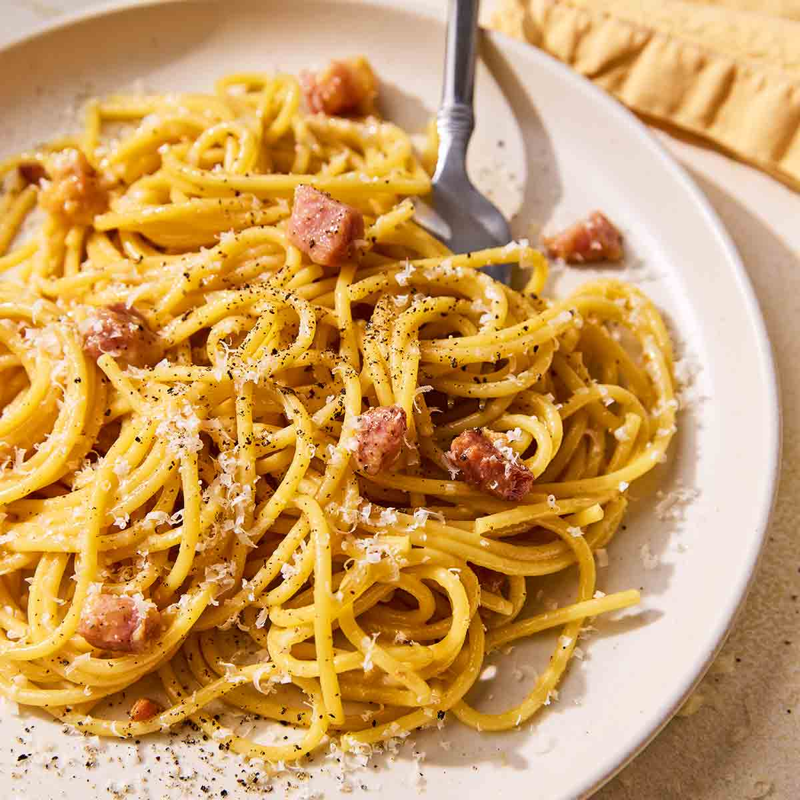

HomeCarbonara is a beautiful, classic Italian pasta that is so creamy, you swear there can be a good amount of cream in it. And indeed, there is plenty of recipes that cheat by adding in cream.
Bring a large pot of salted water to a boil. Add the spaghetti and cook until al dente. Before draining, reserve about 1 cup of starchy pasta water.
While the pasta cooks, place the guanciale in a cold skillet over medium heat. Fry slowly until the fat renders out and the edges turn golden and crispy. Remove the pan from the heat.
In a large bowl, whisk together the whole eggs, egg yolks, grated Pecorino Romano, and cracked black pepper until smooth.
Toss the hot, drained pasta directly into the skillet with the rendered guanciale fat. Next, transfer the pasta to the bowl with the egg-and-cheese mixture (or pour the mixture over the pasta away from direct burner heat to avoid scrambling).
Stir and toss vigorously, adding a splash of the reserved hot pasta water a little at a time, until a glossy, creamy sauce coats every strand.
Plate immediately with extra grated cheese and cracked black pepper on top.